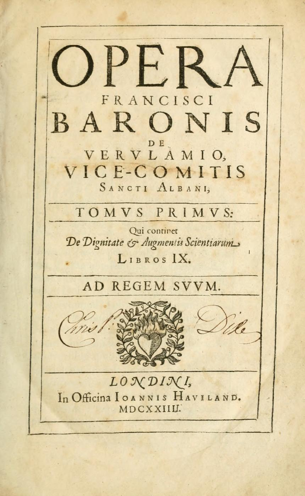
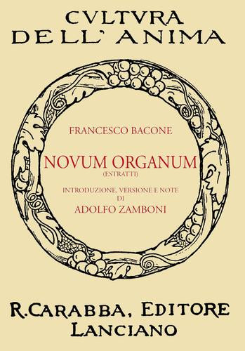

48:03 · 4 OPERE
Sul perché la scienza non è la "scienzia".
Il filo del discorso
Il relatore usa il termine polemico scienzia per distinguere il sapere che si espone alla verifica da ciò che considera una richiesta di obbedienza alla autorità. La ricostruzione attraversa la incommensurabilità della diagonale del quadrato, Bacon e il metodo sperimentale, il rapporto fra Newton ed Einstein, il determinismo di Laplace e il principio di indeterminazione. La scienza viene proposta come sistema di conoscenze aperto alla revisione, capace di produrre previsioni probabilistiche senza presentarle come certezze assolute. Il confronto con la comunicazione pandemica e con le università resta una valutazione del relatore. La scheda precisa alcuni passaggi: la riduzione del rischio non richiede sterilizzazione completa, il problema dei tre corpi non elimina il determinismo classico e la indeterminazione quantistica non significa che di una particella si possa sapere soltanto una cosa oppure l’altra. La conclusione chiede di valutare ragionamenti e prove, distinguendo fiducia motivata e dogmatismo.
I libri nel discorso

De dignitate et augmentis scientiarum
Frontespizio del volume: Londra, John Haviland,1623, nove libri, cura William Rawley. Frontespizio autentico della copia Thomas Fisher Rare Book Library, University of Toronto, digitalizzata in Internet Archive; il catalogo segnala che le date dei frontespizi sono state alterate a mano in1624. Il documento stampato è del 1623, non una prima edizione 1626. Non è copertina esterna e non è copia attribuita al video.
Frontespizio autentico della digitalizzazione bibliotecaria; indicazione1624 manoscritta su edizione 1623. Non copertina esterna né prova della copia usata nel filmato.
Bacon, De augmentis scientiarum e classificazione espliciti; prima edizione 1623, non1626.
Passaggio 23:23 ↗ · Fonti e libro ↗
Novum Organum
Identificazione probabile
Copertina di una selezione di estratti: Casa Editrice Carabba, Cultura dell’Anima, introduzione, versione e note Adolfo Zamboni, ISBN 9788863441932. Ristampa anastatica di estratti: la parola ESTRATTI è visibile sulla copertina. Immagine autentica del catalogo corrente, non edizione integrale e non attribuita alla lezione; anno della ristampa non dedotto dalla sol’immagine.
La copertina reca ESTRATTI: selezione tradotta da Adolfo Zamboni, non intero Novum Organum. Edizione di riferimento, non identificazione di copia mostrata.
Bacon e gli idola riconoscibili; titolo non pronunciato, identificazione probabile. Copertina di una selezione di estratti dichiarata.
Passaggio 23:43 ↗ · Fonti e libro ↗
Traité de mécanique céleste
Frontespizio del tomo primo: Opera pubblicata in cinque tomi dal 1799 al 1825. Immagine: frontespizio del tomo primo, Parigi, imprimerie de Crapelet, J.B.M.Duprat; Berlino, F.T.de la Garde,1799. ETH-Bibliothek Zürich, Rar8684, DOI10.3931/e-rara-42484, Public Domain Mark, canvas12306806. Il singolo frontespizio non rappresenta tutte le legature o edizioni dell’opera.
Frontespizio autentico del tomo I1799, non copertina esterna e non immagine di tutti i cinque tomi. ETH-Bibliothek Zürich, Rar8684,https://doi.org/10.3931/e-rara-42484/ Public Domain Mark.
Laplace, Traité de mécanique céleste e cinque tomi espliciti, cronologia normalizzata con cataloghi1799–1825.
Passaggio 27:54 ↗ · Fonti e libro ↗
Essai philosophique sur les probabilités
Identificazione probabile
Frontespizio della seconda edizione: Frontespizio autentico della seconda edizione rivista e aumentata, Parigi, Mme Ve Courcier,1814,190 pagine nel catalogo ETH. ETH-Bibliothek Zürich, Rar5003, DOI10.3931/e-rara-3684, Public Domain Mark, canvas1090753. Non copertina esterna, non prova della edizione usata dal relatore.
Frontespizio autentico 1814, non copertina esterna. ETH-Bibliothek Zürich, Rar5003,https://doi.org/10.3931/e-rara-3684/ Public Domain Mark.
Intelligenza onnisciente e determinismo di Laplace: probabile rimando alla apertura dell’Essai philosophique sur les probabilités, titolo non pronunciato.
Passaggio 31:40 ↗ · Fonti e libro ↗